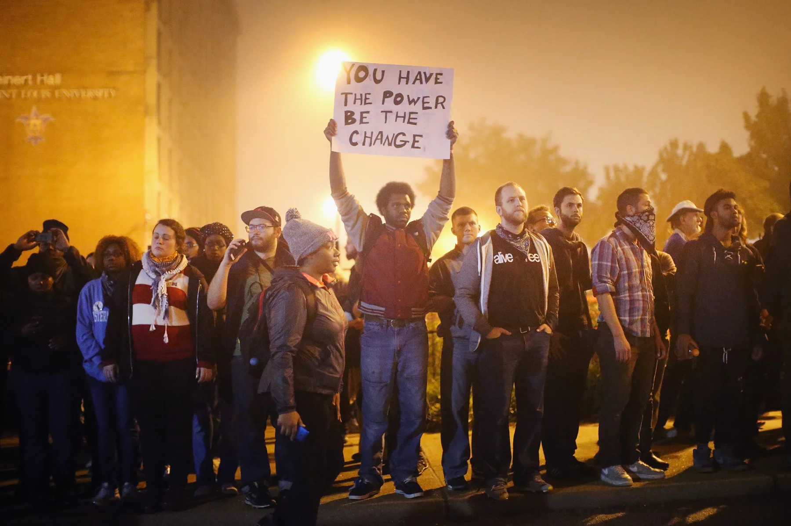

Methodology
This wave of protests also revealed the deep divide in the perspectives of white and black Americans. A survey conducted by the Pew Research Center in 2014 revealed that 80% of black respondants believed Brown's death "raised important questions about race", compared to only 37% of whites. But while much is known about the racial perspectives of white adults, far less is known of the views of white children. In 2014-15, Dr. Megan Underhill interviewed 40 white parents in Cinncinati, OH to gather data on how white parents speak to thier children about racial tension and protests when events such as Brown's death are at the forefront of American news.
The chosen location is significant for having one of the deepest racial divides in the US. Although the black and white populations are nearly half and half (45% and 49% respectively), Cinncinati was the twelfth most segregated city at the time. Given this reputation, Dr. Underhill presented her study as “The Cincinnati Parenthood Project” and studying how parents convey their own social backgrounds and people of different social backgrounds to their children. The study notes that most parents found it "interesting" or "novel" when the topic of race came up, but some were caught off guard or even uncomfortable. Although all self-identified as middle class, the median household income of the participants was $100,000. Michael Brown's death occured a month into the project, resulting in data that only partially reflects attitudes about this event.